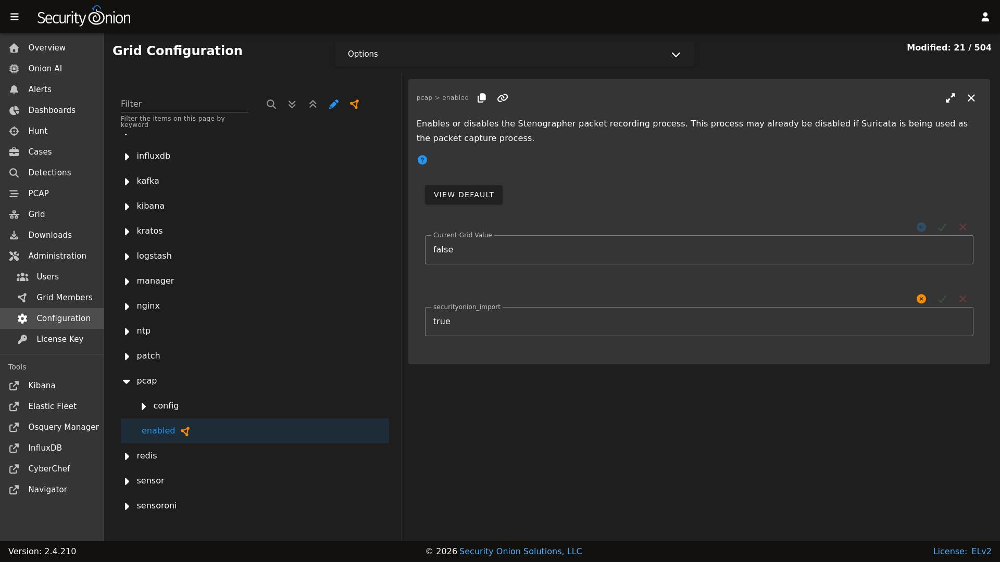

Stenographer
Stenographer is one of the tools that Security Onion uses to write network traffic to disk. From https://github.com/google/stenographer:
Stenographer is a full-packet-capture utility for buffering packets to disk for intrusion detection and incident response purposes. It provides a high-performance implementation of NIC-to-disk packet writing, handles deleting those files as disk fills up, and provides methods for reading back specific sets of packets quickly and easily.
Stenographer uses AF-PACKET for packet acquisition. It’s important to note that Stenographer is totally independent from Suricata and Zeek. This means that Stenographer has no impact on your NIDS alerts and protocol metadata.
For new installations in either Eval or Standalone mode, full packet capture is written to disk by Suricata. For other deployments, full packet capture is written to disk by Stenographer but you can optionally switch this to Suricata. For more information, please see the Suricata section.
Output
Stenographer writes full packet capture to /nsm/pcap/. It will automatically start purging old data once the partition reaches the DiskFreePercentage setting as shown below.
Analysis
You can access full packet capture via the PCAP interface:

Alerts, Dashboards, Hunt, and Kibana allow you to easily pivot to the PCAP interface.
Command Line
You can also access packet capture from the command line of the box where the pcap is stored using a Stenographer query as defined at https://github.com/google/stenographer#querying. In the following examples, replace “YourStenoQueryHere” with your actual Stenographer query.
The first option is using docker to run stenoread. If the query succeeds, you can then find the resulting pcap file in /nsm/pcaptmp/ in the host filesystem:
sudo docker exec -it so-steno stenoread "YourStenoQueryHere" -w /tmp/new.pcap
We’ve included a wrapper script called so-pcap-export to make this a little easier. For example:
sudo so-pcap-export "YourStenoQueryHere" output
If the query succeeds, you can then find the resulting output.pcap file in /nsm/pcapout/ in the host filesystem.
Configuration
You can configure Stenographer by going to Administration –> Configuration –> pcap.
{kind=link}

Disk Free Percentage
An important configuration item to be aware of is steno’s DiskFreePercentage setting. From https://github.com/google/stenographer/blob/master/INSTALL.md#threads:
DiskFreePercentage: The amount of space to keep free in the packets directory. stenographer will delete files in this thread’s packets directory when free disk space decreases below this percentage.
You can find this setting at Administration –> Configuration –> pcap –> config –> diskfreepercentage.
If you have a distributed deployment with dedicated sensor nodes, then the default value of 10 should be reasonable since Stenographer should be the main consumer of disk space in the /nsm partition. However, if you have systems that run both Stenographer and Elasticsearch at the same time (like eval and standalone installations), then you’ll want to make sure that this value is no lower than 21 so that you avoid Elasticsearch hitting its watermark setting at 80% disk usage. If you have an older standalone installation, then you may need to manually change this value to 21.
Maximum Files
By default, Stenographer limits the number of files in the pcap directory to 30000 to avoid limitations with the ext3 filesystem. However, if you’re using the ext4 or xfs filesystems, then it is safe to increase this value. So if you have a large amount of storage and find that you only have 3 weeks worth of PCAP on disk while still having plenty of free space, then you may want to increase this default setting. To do so, you can go to Administration –> Configuration –> pcap –> config –> maxdirectoryfiles and set the value to something appropriate for your system.
Diagnostic Logging
Diagnostic logging for Stenographer can be found at /opt/so/log/stenographer/. Depending on what you’re looking for, you may also need to look at the Docker logs for the container:
sudo docker logs so-steno
Disabling
Since Stenographer is totally independent from Suricata and Zeek, you can disable it without impacting your NIDS alerts or protocol metadata. If you decide to disable Stenographer, you can do so by going to Administration –> Configuration –> pcap –> enabled.
More Information
Note
For more information about stenographer, please see https://github.com/google/stenographer.